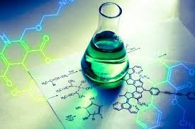

A farmer noticed that some crops grew healthier than others even when planted on similar land. The difference was often found in the soil, nutrients, fertilizers, and chemical processes taking place beneath the surface. Chemistry helps us understand these hidden processes that support agricultural production.
Chemistry is the study of matter, its composition, properties, and the changes it undergoes. In agriculture, Chemistry helps us understand soil fertility, fertilizers, pesticides, plant nutrition, and food production.
Modern agriculture depends heavily on Chemistry. Fertilizers, pesticides, food preservation, soil testing, water treatment, and crop improvement all rely on chemical knowledge. Without Chemistry, large-scale food production would be difficult.
This is only a small introduction. If you want to understand how programmes connect to university courses, careers, opportunities, and future success, get a copy of:
The guide designed to help students make informed decisions about their future and discover opportunities they may never have considered.